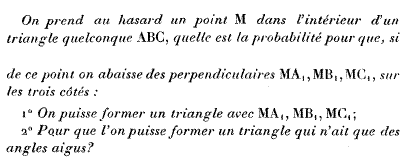

Problema 295
Se toma al azar un punto M en el interior de un triángulo arbitrario ABC.
a) ¿Cuál es la probabilidad para que, si desde punto se bajan las perpendiculares MA1, MB1, MC1, sobre los tres lados se pueda construir un triángulo con MA1 MB1 y MC1?.
b) ¿Y para que se pueda formar un triángulo que tenga todos sus ángulos agudos?
Lemoine E. (1883) : Quelques questions de probabilities résolues géometricament. Bulletin de la S.M.F (Societé Mathématique de France, Tomo 11, p 13-25

Propuesto por Juan Bosco Romero Márquez, profesor colaborador de la Universidad de Valladolid.